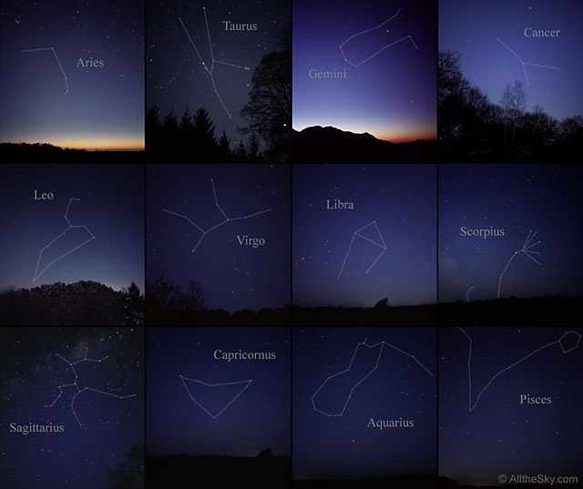

History behind Constellations
A constellation is a cluster of stars forming a pattern that is normally named after its structure or identified with a mythological figure.
Zodiac Signs
Aries, Taurus, Gemini, Cancer, Leo, Virgo, Libra, Scorpio, Sagittarius, Capricorn, Aquarius,and Pisces are all zodiac signs that have come from constellations.
Famous Constellations
-Big Dipper/Ursa major
-Little Dipper/Ursa minor
-Orion, "the hunter"
-Taurus, "the bull"
-Gemini, "the twins"